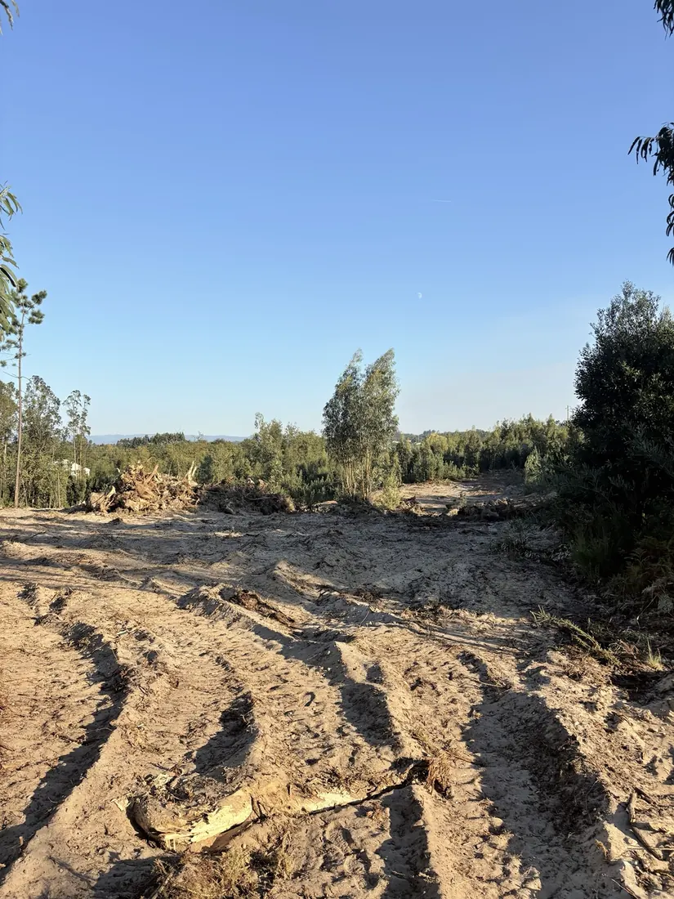
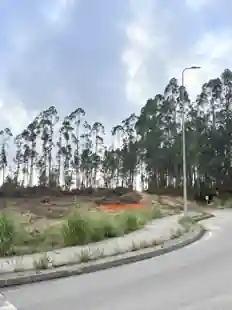

Homes, streets and facilities
The plan shows new development around the stadium and towards Azurva. The clearing I photographed appears to be in this area; its precise authorisation still needs checking.
Between the stadium, Taboeira and Azurva, there are still trees, paths and places where birds can be heard. I walk here. I have also watched parts of this landscape being cleared. A new plan would bring housing, tourism, roads and an 18-hole golf course. I want to understand what will remain — and whether more of this forest can be saved.
Entre o estádio, a Taboeira e a Azurva ainda há árvores, caminhos e lugares onde se ouvem as aves. Costumo passear aqui. Também tenho visto partes desta paisagem a serem limpas. Um novo plano prevê habitação, turismo, estradas e um campo de golfe de 18 buracos. Quero compreender o que vai ficar — e se podemos conservar mais desta floresta.
I moved closer to nature because I wanted to walk under trees, hear birds and have somewhere quiet to go. This landscape is not uniform: there are wooded areas, open patches, paths and places that have already been cleared. That does not make the remaining trees unimportant.
On 20 September 2026, I photographed uprooted trees and disturbed soil near Rua da Taboeira and Travessa das Eiras Norte. When I returned on 15 November, a broad area had been cleared. The work appears to be in the part of the plan called UE-1, not necessarily in the golf-course area. Its legal status is not yet known.
A lawn is green. But a golf lawn is not the same as a forest with shade, wildlife and paths among trees.
Mudei-me para mais perto da natureza porque queria passear à sombra das árvores, ouvir as aves e ter um lugar tranquilo onde ir. Esta paisagem não é uniforme: há zonas arborizadas, clareiras, caminhos e locais que já foram limpos. Isso não torna as árvores que restam menos importantes.
No dia 20 de setembro de 2026, fotografei árvores arrancadas e terra remexida junto à Rua da Taboeira e à Travessa das Eiras Norte. Quando voltei, em 15 de novembro, já havia uma grande área limpa. Os trabalhos parecem situar-se na parte do plano chamada UE-1, não necessariamente na zona do golfe. Ainda não conheço a situação legal destes trabalhos.
Um relvado é verde. Mas o relvado de um campo de golfe não substitui uma floresta com sombra, animais e caminhos entre árvores.
I took these photographs on two visits. They document vegetation removal and changes to the soil in the observed area; they do not establish which permits apply.
Tirei estas fotografias em duas visitas. Mostram a remoção de vegetação e alterações no solo na zona observada; não permitem saber, por si só, quais as autorizações aplicáveis.



Author's photographs · Reduced copies without camera metadata. The original files have been kept separately.Fotografias da autora · Cópias reduzidas sem metadados da câmara. Os ficheiros originais foram guardados à parte.
The Plano de Pormenor do Parque Desportivo de Aveiro was approved in October 2025 and published in November. It includes different implementation areas, known as UE — Unidade de Execução.
The plan shows new development around the stadium and towards Azurva. The clearing I photographed appears to be in this area; its precise authorisation still needs checking.
About 115.5 hectares in total, with an approximately 74.4-hectare golf course, tourist accommodation, housing and roads.
The plan also includes green areas and pedestrian routes. But how much existing woodland stays, and which forest paths will remain accessible to everyone?
The plan drawings show intended land uses. They do not, by themselves, prove that every tree within an area will be removed or that a particular path will be closed.
O Plano de Pormenor do Parque Desportivo de Aveiro foi aprovado em outubro de 2025 e publicado em novembro. Divide o território em diferentes áreas de concretização, chamadas UE — Unidade de Execução.
O plano prevê novas construções na zona do estádio e na direção da Azurva. A limpeza que fotografei parece situar-se nesta área; falta confirmar a autorização concreta.
Cerca de 115,5 hectares no total, com um campo de golfe de aproximadamente 74,4 hectares, alojamento turístico, habitação e estradas.
O plano também prevê espaços verdes e percursos pedonais. Mas quanto da floresta atual será conservado e que caminhos ficarão acessíveis a todos?
As plantas mostram a utilização prevista do solo. Não provam, por si só, que todas as árvores serão removidas ou que um determinado caminho será encerrado.
This is not only an environmental question. I would also like to understand who makes the decisions about the land and how the public interest is protected.
In a municipal decision dated 6 February 2025, the city explains that the company Parque Desportivo de Aveiro, S.A. is owned by Grupo Visabeira (54.5%) and the Municipality of Aveiro (45.5%). The same document says that the company holds 589 land parcels in the plan area and proposed a planning contract.
That does not establish that this forest was originally public land, that it was transferred improperly, or that there has been any wrongdoing. I have not reconstructed the ownership history of the individual parcels.
It does, however, raise a fair public question: when a city is both the planning authority and a shareholder in a company involved in developing the area, how are existing nature, public access and residents’ quality of life weighed in the decisions?
Esta não é apenas uma questão ambiental. Gostaria também de perceber quem toma as decisões sobre os terrenos e como é protegido o interesse público.
Numa deliberação municipal de 6 de fevereiro de 2025, a Câmara explica que a empresa Parque Desportivo de Aveiro, S.A. tem como acionistas o Grupo Visabeira (54,5%) e o Município de Aveiro (45,5%). O mesmo documento indica que a empresa detém 589 parcelas na área do plano e propôs um contrato para planeamento.
Isto não prova que a floresta fosse anteriormente um terreno público, que tenha sido transferida de forma irregular ou que exista qualquer infração. Não reconstruí a história da propriedade de cada parcela.
Mas há uma pergunta legítima: quando a Câmara é simultaneamente a entidade responsável pelo planeamento e acionista de uma empresa envolvida no desenvolvimento da zona, como são ponderadas a natureza existente, o acesso público e a qualidade de vida dos moradores?
Source: Aveiro City Council decision of 6 February 2025 ↗. Shareholder percentages describe the company’s capital, not ownership of each individual plot.Fonte: Deliberação da Câmara de Aveiro de 6 de fevereiro de 2025 ↗. As percentagens referem-se ao capital da sociedade, não à propriedade de cada parcela.
The new paths shown on a plan may be welcome. But they do not necessarily replace the experience of walking in woodland. Where can local residents walk in shade, among trees, without having to enter a private resort? I would like a clear answer about which existing routes will survive.
The 2025 environmental report itself describes a golf course as a major water user, in an area where the Cretácico de Aveiro groundwater body has a poor quantitative status. It recommends rainwater collection, reuse, monitoring and avoiding abstraction from that aquifer. How will this be achieved in practice?
Woodland and scrub can provide food and shelter for birds and other animals. I am asking for an up-to-date account of what lives in the affected areas and whether the design can leave more connected habitat in place. Presence of particular protected species on these exact plots has not been established here.
Os novos percursos desenhados no plano podem ser úteis. Mas não substituem necessariamente o passeio por uma floresta. Onde poderão os moradores caminhar à sombra, entre árvores, sem terem de entrar num empreendimento privado? Gostaria de uma resposta clara sobre os caminhos atuais que vão continuar a existir.
O Relatório Ambiental de 2025 reconhece que o campo de golfe consome muita água, numa zona onde a massa de água subterrânea do Cretácico de Aveiro tem estado quantitativo medíocre. Recomenda recolha de água pluvial, reutilização, monitorização e evitar captações nesse aquífero. Como será concretizado tudo isto?
A floresta e os matos podem oferecer alimento e abrigo às aves e a outros animais. Gostaria de ver um levantamento atualizado das espécies nas áreas afetadas e de saber se o desenho do projeto pode preservar mais habitats ligados entre si. A presença de espécies protegidas específicas nestas parcelas não está aqui confirmada.
The original golf project received a conditional environmental decision in 2003. In the 2025 planning documents, CCDR Centro states that this decision has expired and the golf course requires a new AIA — a project-level Environmental Impact Assessment. Some proposed exclusions from the National Ecological Reserve (REN) were withdrawn during the planning process.
Approval of the land-use plan is not the same as a new environmental approval for the golf course. I have not yet verified a new AIA procedure or its public consultation. That is a question I am following, not proof that one does not exist.
Before a landscape changes beyond repair, we should know what was assessed, what alternatives were considered and which parts of the existing forest can remain.
O projeto antigo do campo de golfe recebeu uma decisão ambiental favorável condicionada em 2003. Nos documentos de 2025, a CCDR Centro afirma que essa decisão caducou e que o campo de golfe precisa de uma nova AIA — Avaliação de Impacte Ambiental. Algumas exclusões propostas da Reserva Ecológica Nacional (REN) foram retiradas durante a preparação do plano.
A aprovação do plano de utilização do solo não equivale a uma nova decisão ambiental para o campo de golfe. Ainda não consegui confirmar uma nova AIA nem a respetiva consulta pública. É uma questão que continuo a acompanhar, não uma prova de que não exista.
Antes de uma paisagem mudar de forma irreversível, precisamos de saber o que foi avaliado, que alternativas foram estudadas e que partes da floresta podem continuar a existir.
I photographed uprooted trees and altered ground near Rua da Taboeira. These are observations of physical change, not a conclusion about legality.
I returned and photographed the cleared area and the remaining trees.
I sent a documented request to the Public Prosecutor's Office in Aveiro asking it to examine the works and consider preventive measures if legally justified. I also wrote separately to the Ministry of Environment and Energy asking about the forest, water, alternatives and public access.
Both emails were sent. Neither an official case registration nor an investigation or intervention has been confirmed for this forest case. I will update this when there is a verifiable response.
Fotografei árvores arrancadas e alterações no terreno junto à Rua da Taboeira. São observações de mudanças físicas, não conclusões sobre a legalidade.
Voltei ao local e fotografei a área limpa e as árvores que ainda restam.
Enviei um pedido documentado ao Ministério Público em Aveiro para avaliar os trabalhos e eventuais medidas preventivas, se houver fundamento legal. Escrevi também ao Ministério do Ambiente e Energia para pedir esclarecimentos sobre a floresta, a água, as alternativas e o acesso público.
Ambos os emails foram enviados. Ainda não foi confirmado um número de processo, uma investigação ou uma intervenção relativa a este caso da floresta. Atualizarei esta informação quando houver resposta verificável.
This forest dossier is separate from the Antiga Lota case and its administrative reference. I am not publishing personal correspondence or contact details.Este dossiê sobre a floresta é diferente do caso da Antiga Lota e da respetiva referência administrativa. Não publico correspondência pessoal nem contactos privados.
These are public documents. They explain the project, its proposed uses and the environmental conditions that need to be considered.
Estes documentos são públicos. Explicam o projeto, os usos propostos e as condições ambientais a considerar.
This is an independent resident's account. It is not an official environmental study. Observed clearing should not be confused with proof of unauthorised work, and a planning designation is not a verified map of tree removal.Este é um relato independente de uma moradora, não um estudo ambiental oficial. A limpeza observada não prova que os trabalhos sejam ilegais, e a classificação do solo num plano não é um mapa verificado de abate de árvores.
I am not asking for the city to stop changing. I am asking whether it can change without losing so much of the nature that people and wildlife already rely on. Before more trees are removed, I hope the remaining forest, water and paths receive a proper, transparent examination.
Não peço que a cidade deixe de mudar. Pergunto se pode mudar sem perder tanta natureza de que as pessoas e os animais já dependem. Antes de desaparecerem mais árvores, espero que a floresta, a água e os caminhos que restam sejam analisados com atenção e transparência.